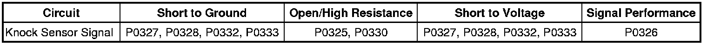

P0326
DTC P0324, P0325, P0326, P0327, P0328, P0330, P0332, or P0333
Diagnostic Instructions
* Perform the Diagnostic System Check - Vehicle (Initial Inspection and Diagnostic Overview) prior to using this diagnostic procedure.
* Review Strategy Based Diagnosis (Initial Inspection and Diagnostic Overview) for an overview of the diagnostic approach.
* Diagnostic Procedure Instructions (Initial Inspection and Diagnostic Overview)provides an overview of each diagnostic category.
DTC Descriptors
DTC P0324
- Knock Sensor (KS) Module Performance
DTC P0325
- Knock Sensor (KS) Circuit Bank 1
DTC P0326
- Knock Sensor (KS) Performance
DTC P0327
- Knock Sensor (KS) Circuit Low Voltage Bank 1
DTC P0328
- Knock Sensor (KS) Circuit High Voltage Bank 1
DTC P0330
- Knock Sensor (KS) Circuit Bank 2
DTC P0332
- Knock Sensor (KS) Circuit Low Voltage Bank 2
DTC P0333
- Knock Sensor (KS) Circuit High Voltage Bank 2
Diagnostic Fault Information

Circuit/System Description
The knock sensor (KS) system enables the control module to control the ignition timing for the best possible performance while protecting the engine from potentially damaging levels of detonation. The engine control module (ECM) monitors 2 separate KS, located under the intake manifold. The KS produces an AC voltage signal that varies depending on the vibration level during engine operation. The control module receives the KS signal through 2 isolated signal circuits. The control module adjusts the spark timing based on the amplitude and the frequency of the KS signal.
Conditions for Running the DTC
* DTC P0324 runs continuously when the engine speed is greater than 2,000 RPM and the engine load is greater than a calibrated amount.
* DTCs P0326 run continuously when:
- The engine speed is greater than or equal to 1,200 RPM
- The MAP is greater than 80 kPa
- DTCs P0120, P0121, P0122, or P0123 are not set
* DTC P0325, P0330, P0327, P0328, P0332, P0333 run continuously when:
- The engine coolant temperature (ECT) is greater than 75°C (167°F)
- The engine run time is greater than 90 seconds
Conditions for Setting the DTC
P0324
The control module has detected an internal circuitry fault.
P0325 and P0330
The KS signal circuits are open or shorted together for up to 6 seconds.
P0326
* The KS signal indicates an excessively noisy engine component (e.g. loose bracket, noisy lifter).
* The control module commanded spark retard at a given engine load and speed is more than the calibrated value.
* The above conditions exist for up to 6 seconds.
P0327, P0328, P0332, and P0333
The KS signal circuits are shorted to voltage or ground.
Actions Taken When the DTC Sets
* DTCs P0324, P0325, P0326, P0327, P0328, P0330, P0332, P0333 are Type B DTCs.
* Spark timing will be retarded to reduce spark knock, and may cause reduced engine power.
Conditions for Clearing the DTC
DTCs P0324, P0325, P0326, P0327, P0328, P0330, P0332, P0333 are Type B DTCs.
Diagnostic Aids
* Inspect the KS for physical damage. A KS that is dropped or damaged may cause a DTC to set.
* Inspect the KS for proper installation. A KS that is loose or over torqued may cause a DTC to set.
* The KS mounting surface should be free of burrs, casting flash, and foreign material.
Reference Information
Schematic Reference
Engine Controls Schematics (Electrical Diagrams)
Connector End View Reference
Component Connector End Views (Connector Views)
Electrical Information Reference
* Circuit Testing (Component Tests and General Diagnostics)
* Connector Repairs (Component Tests and General Diagnostics)
* Testing for Intermittent Conditions and Poor Connections (Component Tests and General Diagnostics)
* Wiring Repairs (Component Tests and General Diagnostics)
* Measuring Frequency (Component Tests and General Diagnostics)
DTC Type Reference
Powertrain Diagnostic Trouble Code (DTC) Type Definitions (Diagnostic Trouble Code Descriptions)
Scan Tool Reference
Control Module References (Programming and Relearning)for scan tool information
Circuit/System Testing
P0324
Important: If DTCs P0325, P0327, P0328, P0330, P0332, or P0333 are set, diagnose those DTCs first.
This DTC indicates an internal control module circuitry failure. Replace the ECM.
P0325, P0327, P0328, P0330, P0332, and P0333
1. Ignition ON, engine OFF.
2. Disconnect X 104 at the back of the engine.
3. Measure for 2-3 volts between each of the following circuits and ground on the ECM side of the harness connector.
* Knock sensor bank 1 signal circuit terminal G
* Knock sensor bank 1 signal circuit terminal H
* Knock sensor bank 2 signal circuit terminal J
* Knock sensor bank 2 signal circuit terminal K
• If less than the specified range, test the circuits for a short to ground or an open/high resistance. If the circuits test normal, replace the ECM.
• If greater than the specified range, test the circuits for a short to voltage. If the circuits test normal, replace the ECM.
4. Test the KS circuits on the KS side of the connector for the following:
* Open/high resistance
* Short to ground
* Short to any other circuit
5. If all circuits test normal, replace the appropriate KS.
P0326
Important: If DTCs P0325, P0327, P0328, P0330, P0332, P0333, P0335 or P0336 are also set, diagnose those DTCs first.
* Inspect for a loose or broken vehicle accessory or accessory bracket.
* Inspect for excessive engine mechanical noise.
Component Testing
1. KS 1-Connect the DMM between the knock sensor signal terminals G and H on the sensor side of the KS inline harness connector X104.
OR
KS 2-Connect the DMM between the knock sensor signal terminals J and K on the sensor side of the KS inline harness connector X104.
2. Set the DMM to the 400 mV AC hertz scale and wait for the DMM to stabilize at 0 Hz.
Important: DO NOT tap on plastic engine components.
3. Tap on the engine block with a non-metallic object near the KS while observing the signal indicated on the DMM.
4. The DMM should display a fluctuating frequency while tapping on the engine block.
Repair Instructions
Perform the Diagnostic Repair Verification (Verification Tests) after completing the diagnostic procedure.
* Control Module References (Programming and Relearning)for ECM replacement, setup, and programming
* Knock Sensor 1 Replacement (Service and Repair)
* Knock Sensor 2 Replacement (Service and Repair)